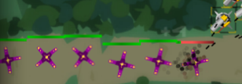

Já jsem Borec, jako kdybych jel!
Já jsem Borka ušatá.
Já jsem Borče j.k.j
Tak jako když si myslíš, že jdeš.
Tak jako když se nerozejdeš.
Tak jako ten a ten a ten.
Tak jako když je rozpleten. Tak jako zloba převeliká, tak jako smůla předaleká, tak jako děs a velký běs, co se řítí do nebes.
tučné písmo
silné písmo
kurziva
podtržení
zvýraznění
velké písmo
malé písmo
strojopis
strojopis
Tady zalom:
Zalomeno.
Obrázek: 